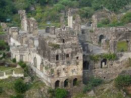

Kondapalli Fort
Kondapalli Fort, also known as Kondapalli Kota, is a historic fort located in the Krishna district of Andhra Pradesh, India. It was originally built by Prolaya Vema Reddy of the Kondavid dynasty in the 14th century. The fort is known for its impressive architecture and historical significance.
Location: Kondapalli, Krishna District, Andhra Pradesh, India
History: Built in the 14th century by Prolaya Vema Reddy, later fortified by the Qutub Shahis and then taken over by the British.
Attractions: The fort features three entry gates, a palace, several temples, and stunning views of the surrounding landscape.
Visiting Hours: 10:00 AM - 5:00 PM
Entrance Fee: ₹20 for Indian citizens, ₹100 for foreign tourists